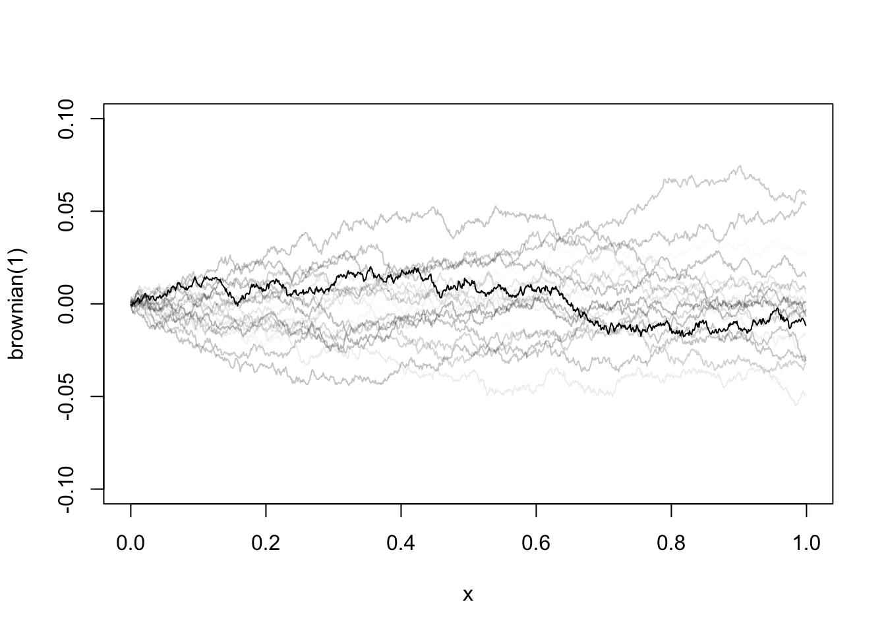
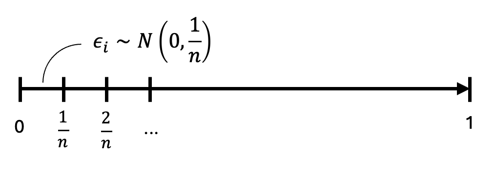

21 Brownian Motion
21.1 Continuous random walk
Brownian motion, or Wiener process, is the continuous-time extension of a discrete-time random walk. To define the continuous version of a random walk, we cannot simply sum up infinite number of white noises, which will certainly explode. Instead, we chop up a finite interval into infinitely many small intervals, each one corresponding to a tiny Gaussian white noise. The following table shows how a discrete random walk extends to a continuous function.
| Random Walk | Brownian Motion | |
|---|---|---|
| Innovation | \(\epsilon_i\sim\text{WN}(0,1)\) |  |
| Stochastic process | \(y_t = \epsilon_1 + \cdots + \epsilon_t\) | \(W(t)_{t\in[0,1]} = \lim_{n\to\infty}\sum_{i=1}^{nt}\epsilon_i\) |
| Expectation | \(\mathbb E[y_t]=0\) | \(\mathbb E[W(t)] = 0\) |
| Variance | \(\text{Var}[y_t]=t\text{Var}[\epsilon_i]=t\) | \(\text{Var}[W(t)]=nt\text{Var}[\epsilon_i]=t\) |
| Quadratic variation | \(\mathbb E\sum_{i=1}^{t}(y_i-y_{i-1})^2=t\) | \(\int_0^t(dW)^2 = t\) |
Brownian motion \(W(t)\) is a stochastic function. Its realized path is different each time we take a draw from it. But every piece of it follows a tiny Gaussian process. The function is continuous, but nowhere differentiable. It is hard to imagine such a function at first glance. But as we proceed, we will appreciate its amazing properties. Despite its path is random, the area under the curve integrates to a well-defined probability distribution. The squared changes (quadratic variation) even sum up to a deterministic constant.
21.2 Some properties
The quadratic variation is one of the most important properties of Brownian motions. Intuitively, it says the squared tiny changes sum up to a constant with probability \(1\) no matter which realized path it takes. Smooth functions will not have such property, because \((dX)^2\) diminishes much faster than \(dX\), surely we get \(\int_0^t(dX)^2 =0\). Because Brownian motion fluctuations too much, the squared changes do not diminish away. To see this, imagine summing up the squares of infinitely many small increments up to \(t\):
\[ \lim_{n\to\infty}\sum_{i=1}^{nt}\left[ X\left(\frac{i}{n}\right) - X\left(\frac{i-1}{n}\right) \right]^2 = \lim_{n\to\infty}\sum_{i=1}^{nt}\epsilon_i^2, \]
with \(\epsilon_i\sim N\left(0,\frac{1}{n}\right)\). Therefore, \(\mathbb E(\epsilon_i^2)=\frac{1}{n}\). Let \(z_i = \epsilon_i^2\). The sum above can be rewritten as
\[ \sum_{i=1}^{nt} z_i = nt\left(\frac{1}{nt}\sum_{i=1}^{nt} z_i\right) \overset{\text{LLN}}\to nt\mathbb{E}(z_i) = t. \]
The integral version is the quadratic variation
\[ \int_0^t(dW)^2 = t, \tag{21.1}\]
or written in differential form
\[ (dW)^2 = dt. \tag{21.2}\]
It should be stressed, \(W\) is not differentiable. We use the notation \(dW\), but it is not the same as conventional differentials. The calculus for Brownian motions, the Itô calculus, which will be introduced below, is a different class of calculus specifically designed for stochastic functions. Before we get to that, let’s first have a look at some additional properties of Brownian motions.
By Central Limit Theorem, it holds that
\[ \frac{1}{\sqrt{nt}} W(t) = \sqrt{nt}\frac{1}{nt}\sum_{i=1}^{nt}\epsilon_i \to N\left(0,\frac{1}{n}\right) \]
Therefore,
\[ W(t) \sim \sqrt{nt} N\left(0,\frac{1}{n}\right) \sim N(0,t); \tag{21.3}\]
It follows that, for any \(r<s\),
\[ W(s) - W(t) \sim N(0, s-t); \tag{21.4}\]
As \(s\) and \(t\) become arbitrarily close, we have
\[ dW \sim N(0, dt). \tag{21.5}\]
In essence, Brownian motion is the accumulation of tiny independent Gaussian innovations. We give the formal definition of Brownian motions below.
Brownian motions are frequently used to model stock returns. For a fixed horizon \(T\), the returns are normally distributed, with volatility scaled by \(\sqrt T\). And the returns over different periods are independent, which means no predictability from past returns to future returns.
21.3 Itô calculus
Lemma 21.1 Let \(F(W)\) be a “smooth” function of a Brownian motion \(W(t)\). Then
\[ dF = F'dW + \frac{1}{2}F''dt. \]
Proof. For an informal proof, it immediately follows from the Taylor expansion
\[ F(W(t+h))-F(W(t))=F'(W(t+h)-W(t))+\frac{1}{2}F''(W(t+h)-W(t))^2+\cdots \]
As \(h\to 0\),
\[ dF = F'dW + \frac{1}{2}F''(dW)^2. \]
By Equation 21.2, \((dW)^2= dt\). Therefore,
\[ dF = F'dW + \frac{1}{2}F''dt. \]
This formula is known as the Itô’s lemma, which is the key equation of Itô calculus. Note that how this differs from the differential formula for normal functions: \(dF = F'dW\). The second-order term does not disappear precisely because the quadratic variation does not go to zero.
Example 21.1 \(F(W) = W^2 \implies dF = 2WdW + dt\)
Example 21.2 Let’s do a more involved example to familiar ourselves with the Itô’s lemma, especially how the second-order differentiation of the Brownian motions plays out in computation.
We like to model the continuous-time stock price with Brownian motions. Let \(S_t\) be the stock price at time \(t\). Assume the behavior of \(S_t\) follows a stochastic differential equation:
\[ \frac{dS_t}{S_t}=\mu dt + \sigma dW \]
That is, the percentage of \(S_t\) is a continuous time random walk with drift \(\mu\) and volatility \(\sigma\). Let’s compute the log-return of the stock over the horizon \(T\):
\[ R_T = \ln (S_T) - \ln (S_0) = f(S_T) \]
Apply second-order Taylor expansion:
\[ \begin{aligned} dR_T &= f' dS_T + \frac{1}{2}f'' (dS_T)^2 \\ &= \frac{1}{S_T} dS_T - \frac{1}{2}\frac{1}{S_T^2} (dS_T)^2 \\ &= \frac{dS_T}{S_T} - \frac{1}{2}\left(\frac{dS_T}{S_T}\right)^2 \\ &= (\mu dt + \sigma dW) - \frac{1}{2}(\mu dt + \sigma dW)^2 \\ &= (\mu dt + \sigma dW) - \frac{1}{2}(\mu^2 dt^2 + 2\mu\sigma dtdW + \sigma^2 dW^2) \\ &\to (\mu dt + \sigma dW) - \frac{1}{2} \sigma^2 dt \\ &= \left(\mu - \frac{1}{2} \sigma^2\right) dt + \sigma dW \end{aligned} \]
The second last step holds because, as \(dt \to 0\), the terms \(dt^2\) and \(dt dW\) tend to zero faster than \(dW^2\). The only term left is \(dW^2 = dt\). If we define integral as the inverse of differentiation, we have
\[ \begin{aligned} R_T = \int_0^T dR_T &= \left(\mu - \frac{1}{2} \sigma^2\right) \int_0^T dt + \sigma \int_0^T dW \\ &= \left(\mu - \frac{1}{2} \sigma^2\right)T + \sigma\sqrt{T}\epsilon_T \end{aligned} \]
where \(\epsilon_T\) is a standard normal variable. The model tells us that the log-return of a stock over a fixed horizon of \(T\) is normally distributed with mean \((\mu - \sigma^2/2)T\) and standard deviation of \(\sigma\sqrt{T}\). Everything looks familiar, except the Ito’s term, \(\sigma^2/2\), which comes from the non-zero second-order differential \(dW^2\). The famous Black-Scholes formula for option pricing is derived from this model.
Definition 21.1 Stochastic integrals as the reverse operation of the stochastic differentiation. Note that we change \(W(t)\) to \(W(s)\) when it enters as the integrand.
- \(\displaystyle \int_{0}^{t} dW = W(t)\);
- \(\displaystyle F(W(t))=\int_0^t f(W(s))dW\) , if \(dF = f\ dW\);
- \(\displaystyle F(t, W(t)) = \int_0^t f(s, W(s))dW + \int_0^t g(s, W(s))ds\) , if \(dF = f\ dW + g\ dt\).
Example 21.3 Given \(dW^2 = 2W dW + dt\), take integral on both sides:
\[ W^2(t) = 2\int_0^t W(s) dW + \int_0^t ds \]
\[ \implies \int_0^t W dW = \frac{1}{2}[W^2(t) - t]. \]
Setting \(t=1\), it follows that
\[ \int_0^1 W dW = \frac{1}{2}[W^2(1)-1]. \]
Note that \(W(1) \sim N(0,1)\). So \(W^2(1) \sim \chi^2(1)\) with expectation 1. Thus \(\int_0^1 W dW\) is centered at 0 but skewed.
Example 21.4 Given \(d(tW) = Wdt + t\ dW\) (verify this with Ito’s lemma), we have
\[ tW(t) = \int_0^t W(s)ds + \int_0^t s\ dW \]
\[ \begin{aligned} \implies \int_0^t W(s)ds &= tW(t) - \int_0^t s\ dW \\ &=t\int_0^t dW - \int_0^t s\ dW \\ &=\int_0^t (t-s) dW. \end{aligned} \]
Proposition 21.1 Let \(W(t)\) be a Brownian motion. Let \(f(t)\) be a nonrandom function of time. Then
- \(\mathbb{E}\left[\int_0^t f(s)dW\right]=0\);
- \(\mathbb{E}\left[\left(\int_0^t f(s)dW\right)^2\right]=\mathbb{E}\left[\int_0^t f^2 ds\right]\) (Itô isometry);
- \(\int_0^t f(s) dW \sim N\left(0, \int_0^t f^2 ds\right)\).
If \(f(t)\) represents a trading strategy and the stock price follows a Brownian motion, the theorem tells us the expected payoff of this strategy is zero; more precisely, the payoff follows a Gaussian distribution.
Example 21.5 Following the last example,
\[ \int_0^t W ds = \int_0^t (t-s) dW \]
\(f(s) = t-s\) is a nonrandom function, apply the theorem above
\[ \text{var}\left[\int_0^t W ds\right]=\int_0^t (t-s)^2ds = \frac{1}{3}t^3 \]
Therefore,
\[ \int_0^t W(s) ds \sim N\left(0, \frac{1}{3}t^3\right). \]
Thus, the integral, the area under the curve of a Brownian motion, follows a Gaussian distribution.
21.4 Unit root process
Consider a unit root process,
\[ y_t = y_{t-1} + \epsilon_t = \sum_{j=1}^{t}\epsilon_j, \]
where \(\epsilon_t\sim\text{WN}(0,1)\), \(t=1,2,\dots,T\). It is not surprising to see the unit root process converges to Brownian motion if stabilizing it by \(T^{-1/2}\) :
\[ \begin{aligned} \frac{1}{\sqrt{T}}y_t &= \frac{1}{\sqrt{T}}\sum_{j=1}^{t}\epsilon_j \\ &= \frac{1}{\sqrt{T}}\sum_{j=1}^{Tr}\epsilon_j \quad(r=t/T) \\ &= \sqrt{r}\left(\frac{1}{\sqrt{Tr}}\sum_{j=1}^{Tr}\epsilon_j\right) \\[1em] &\to \sqrt{r} N(0, 1) \sim N(0,r) \quad(\text{by CLT}) \\[1em] &\to W(r) \quad(\text{by definition}). \end{aligned} \]
If \(\epsilon_t\) has variance \(\sigma^2\), we would have \(T^{-1/2}y_t \to \sigma W(t/T)\). Note if \(y_t\) is stationary, \(y_t\) will not deviate too far from \(\mathbb E(y_t)\), we would have \(T^{-1/2} y_t \to 0\).
Now let’s consider the behaviour of the mean: \(\bar y=\frac{1}{T}\sum_{t=1}^T y_t\). Define \(\xi_T(r)=T^{-1/2}y_t\) , where \(r=t/T\). We have
\[ \begin{aligned} \frac{1}{\sqrt T} \bar{y} &= \frac{1}{\sqrt T}\left(\frac{1}{T}\sum_{t=1}^T y_t\right) \\ &= \frac{1}{T}\sum_{t=1}^T \left(\frac{1}{\sqrt T}y_t\right)=\frac{1}{T}\sum_{t=1}^T \xi\left(\frac{t}{T}\right) \\ &= \Delta r \sum_{r=0}^{1} \xi(r) \quad (r=t/T, \Delta r = 1/T) \\ &\to \int_0^1 \sigma W(r) dr \quad (\Delta r \to 0) \end{aligned} \]Remember for stationary process, we would have \(\bar y \to \mathbb E(y_t)\) . With unit root process, the mean no longer converges to a constant, but to a distribution \(\int_0^1 W(r)dr\sim N(0,\frac{1}{3})\).
For higher orders of \(y_t\), we have
\[ \begin{aligned} \frac{1}{T^2}\sum_{t=1}^{T}y_t^2 &= \frac{1}{T}\sum_{t=1}^{T}\left(\frac{1}{\sqrt T}y_t\right)^2 \\ &= \frac{1}{T}\sum_{t=1}^{T}\left[\xi\left(\frac{t}{T}\right)\right]^2 \\ &= \sum_{r=0}^{1} [\xi(r)]^2 \Delta r \\ &\to \int_0^1 \sigma^2 W^2(r) dr \end{aligned} \]
By continuous mapping theorem, it can be shown, in general
\[ \frac{1}{T^{1+k/2}}\sum_{i=1}^T y_t^k \to \sigma^k\int_0^1 W^k(r)dr. \]
Consider the numerator of the OLS estimator of the unit root process,
\[ \begin{aligned} \sum_{t=1}^{T}y_{t-1}\epsilon_t &= \sum_{i=1}^{T} (\epsilon_1+\cdots+\epsilon_{t-1})\epsilon_t = \sum_{s<t}^{T}\epsilon_s\epsilon_t \\ &= \frac{1}{2}\left[(\epsilon_1+\cdots+\epsilon_T)^2-\sum_{t=1}^{T}\epsilon_t^2\right] \\ &= \frac{1}{2}y_T^2 - \frac{1}{2}\sum_{t=1}^{T}\epsilon_t^2 \end{aligned} \]
Divide it by \(T\), we have
\[ \begin{aligned} \frac{1}{T}\sum_{t=1}^{T}y_{t-1}\epsilon_t &= \frac{1}{2}\left(\frac{1}{\sqrt T}y_T\right)^2 - \frac{1}{2T}\sum_{t=1}^{T}\epsilon_t^2 \\ &= \frac{1}{2}[\xi^2(1)-\hat\sigma^2] \\ &\to \frac{1}{2}[\sigma^2 W^2(1) - \sigma^2] \\ &= \frac{1}{2}\sigma^2 [ W^2(1) - 1] \\ &= \sigma^2 \int_0^1 W dW. \end{aligned} \]
We summarize the important results below.
The last rule was given without proof, as we will need it in the following chapters.